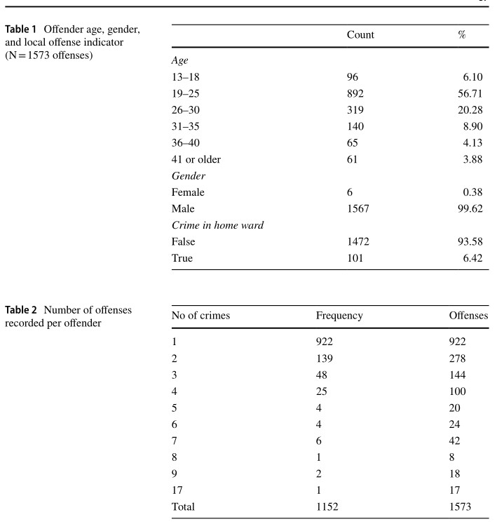
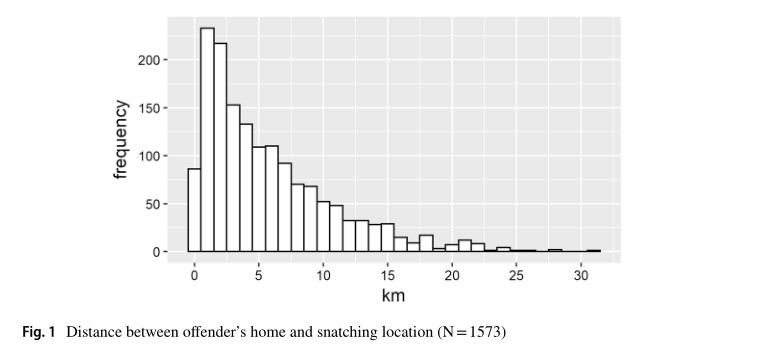
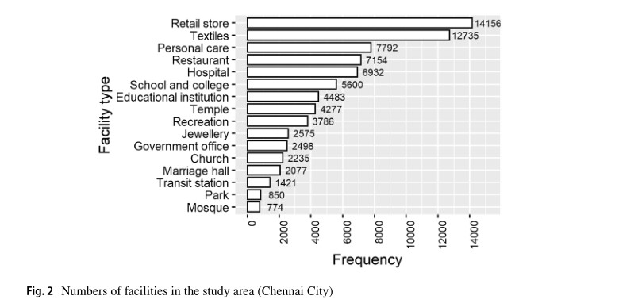
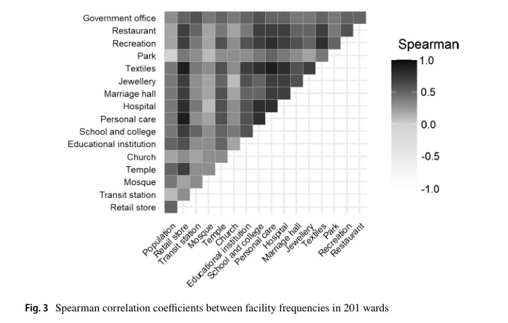
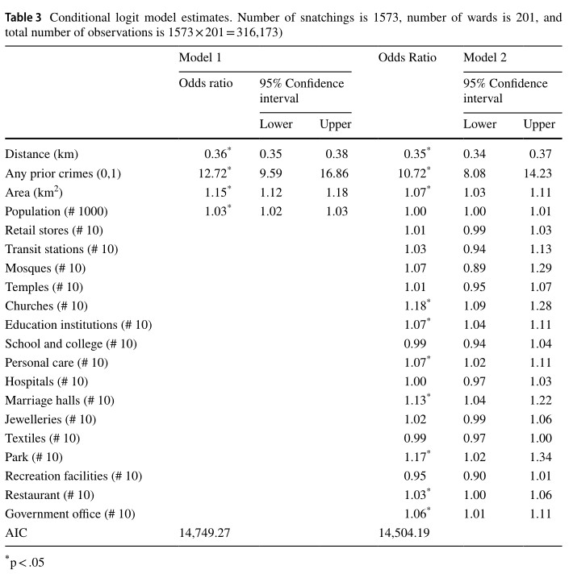

Location Choice of Snatching Offenders in Chennai City
K. Kuralarasan1 · Wim Bernasco2,3
Accepted: 21 April 2021
© The Author(s) 2021
Abstract
Objectives
This study aim to test the applicability of crime pattern theory in an Indian urbancontext by assessing the effects of offender residence, prior offending locations and presence of crime generators and crime attractors on where offenders commit offences.
Methods
The data comprise 1573 police-recorded snatching offenses committed by 1152 identified offenders across the 201 wards of Chennai City. We used discrete crime location choice models to establish the choice criteria that snatching offenders use when they decide where to offend. Data on the locations retail businesses, religious and transportation facilities were collected using Google location services.
Results
The results confirm that snatching offenders prefer to target locations closerto their residence and that they prefer to re-offend at or near their prior offendinglocations. The findings also demonstrate that some but not all crime attractors andgenerators influence the location choice of snatching offenders.
Conclusions
By replicating in an Indian context previously published crime locationchoice findings, our findings support the generality of crime pattern theory. We discuss limitations and make suggestions for future investigations
Data and Methods
Data
Study Area
The study area for the present research is the Greater Chennai City Corporation, a metropolitan area with a population of over 6.6 million during the latest census in 2011. It consists of 201 wards with an average surface area of 2.18 km2 (quartiles 0.97, 1.61 and 2.53) and an average population of 33,195 (quartiles 21,451, 36,560 and 43,622).
Crime Data
We investigate all detected snatching offenses from August 2010 to July 2017 committed in the study area committed by offenders who lived in the study area.The offense data were obtained from the State Crime Records Bureau, Tamil Nadu, India. They include the time, date, and location of all recorded and detected snatching offenses, and they also contain the age, gender and address of the offender. The data consist of 1573 snatching offenses committed by 1152 offenders.
Based on the recorded dates of the crimes, for each snatching offense the number of prior snatching offenses committed by the same offender was determined per ward. Thus, for each snatching offense it was recorded in which wards each of the offender’s previous snatching offenses (if any) had been committed. (Using the same dates of the crimes to determine repeat offending?)
Table 1 presents descriptive information about the 1573 analyzed snatching offenses, including the age and gender of the offender, and whether it was committed in the offender’s own ward of residence.

For every detected snatching incident, the distance was calculated between the home of the offender and the centroids of each of the 201 wards. Based on these distances, Fig. 1 shows the distribution of the home-crime distance, which reveals the typical positively skewed distance decay pattern.

Crime Generators and Attractors
textile stores (including clothing and fabric shops)(纺织品商店)、jewelry shops (珠宝商店)、mosques(清真寺)、temples(寺庙)

Figure 3 presents a graphical overview of the Spearman correlation coefficients between the facility frequencies in wards. All correlations are positive, indicating that different types of facilities tend to agglomerate and lead to facility concentrations. Most correlations are medium-level, between 0.20 and 0.60. High correlations of ~ 0.85 exists between textile stores, personal care and other retail businesses.

Methods
To quantify the spatial preferences of snatching offenders(为了量化抢劫犯的空间偏好) and test the hypotheses(假设), we used the discrete crime location choice method(离散选择模型) (Bernasco and Nieuwbeerta 2005). This method applies McFadden’s random utility maximization theory(效用最大化理论) (McFadden 2001) and econometric discrete choice models(计量离散选择模型) (Ben-Akiva and Lerman 1985; Train 2009) to the offender’s decision of where to commit crime.
This discrete crime location choice method is particularly appropriate for two reasons.
- The first reason is the intimate link it provides between theory and statistical model.
- The second reason is that the method uses a model of individual choice, in which it is possible to include idiosyncratic individual characteristics in the analysis.
If the person committing snatching offense n decides to commit it in ward i, he or she must expect to derive more utility than any of the other 200 wards would provide:
If the unobserved random utility components random error component(随机误差分量) are independent(独立) and identically distributed according to an extreme value distribution(和极值分布相同),The conditional logit model can be derived, in which
Results
Table 3 presents the results of two conditional logit models.

- Distance Hypothesis: The estimated odds ratio of the log-distance effect is 0.36 in Model 1 and 0.35 in Model 2. It indicates that if a ward is further away from the offender’s home, the odds of the offender selecting the ward for snatching decrease.
- Repeat Offending Hypothesis: The odds ratios of 12.72 in Model 1 and 10.72 in Model 2 are quite similar, and indicate a large and statistically significant effect: the odds of selecting a ward are ~ 12 times larger if the offender has previously committed a snatching offense in the ward than if the offender had not committed a previous snatching offense in the ward.
- Crime Generators and Attractors Hypothesis: Based on Table 3, the evidence for this hypothesis is mixed. Whereas we find that the estimated effects of some types of facilities are positive and statistically significant (churches, educational institutions, marriage halls, personal care businesses, parks, restaurants and business offices), the majority are not.
Discussion and Conclusion
it is important not only to verify whether the established relationships also hold in other regions of the world, but also to make sure that key theoretical concepts are measured in a way that reflects relevant(相关的) local economic, social and cultural characteristics. Our analysis of snatching location choices in India, for example, emphasized the potential relevance of specific places (marriage halls(婚礼大厅) and places of worship(礼拜场所)) where many people wear valuable jewelry and clothing ornaments(装饰品) in outdoor settings.
Limitations
Crime better be studied at more fine-grained resolutions, such as streets, street segments or parcels(研究尺度问题——大尺度在空间上具有异质性)
Although the coverage of facilities appears sufficient (fieldwork observations suggested a coverage of more than 95 percent of the facilities), the data do not allow facilities to be differentiated by size. Even facilities of the same type (e.g. hospital, church, or store) can vary widely in the number of visitors they attract, but this variation is not reflected in our facility frequencies.(POIs 的大小对人群的吸引作用存在差异，但由于数据问题无法对POI的大小进行区分)
A final limitation, one that applies to all published crime location choice studies using the discrete spatial choice framework, is that our findings cannot identify the intentions that motivate offenders’ mobility. (无法确定促使犯罪者流动的动机). The crime location choice model cannot distinguish between the choice of whether to commit crime (given the location where the individual is) and the choice of where to commit crime (given sufficient motivation to commit it). This is an important distinction that hinges on the offender’s level of premeditation, i.e. on the extent to which the offense is planned in advance.
Inspires
- The estimated coefficients of the discrete choice model are valid indicators of how land use categories affect the criminal attractiveness of potential target areas.
- Many studies have demonstrated that crime frequencies vary by time of day, by day of week and by season (Andresen and Malleson
2013; Haberman and Ratcliffe 2015; Tompson and Bowers 2013) and some studies have examined whether location preferences also vary temporally (van Sleeuwen et al. 2018). - The present study investigated the effects of offenders’ home locations and of their prior offending locations. Future research could focus on effects of offenders’ work place, previous residences and other anchor points that are part of their awareness space and have a possible impact on their offending location choices.(考虑犯罪者的工作场所？之前的居住点？以及犯罪者意识空间中的其他地方)